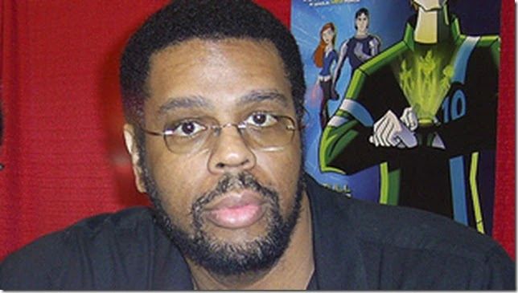

Obituário de Derrick J. Wyatt
Mais de sete meses depois da morte de Derrick J. Wyatt, diretor de arte de Ben 10:
Omniverse, seu obituário foi disponibilizado publicamente por sua irmã Denise.
"Finalmente nos reunimos e postamos isso. Para ser honesta, eu realmente não queria, mas
estou feliz que fizemos (mesmo que tenha sido muito difícil escrever)", disse Denise no
Twitter.[1] O texto conta uma breve história da infância e da carreira de Wyatt e pode
ser acessado clicando aqui. Leia o texto na íntegra e traduzido abaixo:
"Wyatt, Derrick James 10/08/1972 - 16/12/2021 Burbank, CA
Derrick James Wyatt, mais conhecido por seu papel como diretor de arte na série
Transformers: Animated, faleceu em 16 de dezembro de 2021, aos 49 anos. Derrick nasceu
em 10 de agosto de 1972 em Traverse City, Michigan. A família Wyatt se mudou para Paw
Paw, Michigan, onde Derrick frequentou a escola, se formando com a turma de 1990. Ele
amava desenhar desde cedo e era especialmente apaixonado por quadrinhos e animações. Ele
frequentou a Joe Kubert School of Cartoon and Graphic Art (agora conhecida como The
Kubert School) de 1994 - 96. Depois de sair da escola, Derrick se mudou para Burbank,
Califórnia e fez estágio na Spumco, Inc. Ele passou a trabalhar como designer de
personagens na série Mucha Lucha (2002) e então em Os Jovens Titãs (2003 - 2006), onde
com frequência fazia os designs das formas animais de Mutano, divertidamente incluindo
seu animal favorito, o porquinho-da-índia. Fã de Transformers desde a animação original,
Derrick estava animado por ser contratado como diretor de arte e designer de personagens
principal para Transformers: Animated (2007 - 2010), muitas vezes chamando-o de seu
emprego dos sonhos. Ele passaria a trabalhar como designer de personagens principal para
Scooby Doo! Mistério S/A (2010 - 2012) e como diretor de arte e designer de personagens
em Ben 10: Omniverse (2012 - 2014), entre outros.
Dia de Dwayne McDuffie

Hoje, Dwayne McDuffie, um lendário roteirista e criador de quadrinhos, estaria
completando 60 anos de idade. Conhecido por seu trabalho em "Ben 10: Força Alienígena" e
"Ben 10: Supremacia Alienígena", McDuffie faleceu em 21 de fevereiro de 2011, um dia
após seu 49º aniversário, devido a complicações de uma cirurgia de emergência no
coração.
McDuffie escreveu dez episódios de "Força Alienígena" e nove de "Supremacia Alienígena",
todos essenciais para o enredo dessas séries. Para "Ben 10: Omniverse", ele colaborou
com sua esposa Charlotte Fullerton e seu melhor amigo Matt Wayne nos dois primeiros
episódios. Embora tenha contribuído com conceitos importantes para a quarta série da
franquia, Dwayne faleceu antes que os últimos episódios de "Supremacia Alienígena"
fossem ao ar.
Em 1993, McDuffie cofundou a Milestone Media, uma companhia de quadrinhos dedicada à
representatividade das minorias raciais. Durante esse período, ele criou personagens
icônicos para a DC Comics, como Super Choque, Ícone e Hardware.
Além de seu trabalho em quadrinhos, McDuffie também fez contribuições significativas para
animações, incluindo "Super Choque", "Jovens Titãs", "O Que Há de Novo, Scooby-Doo?",
"Liga da Justiça" e "Liga da Justiça Sem Limites". Em 2014, foi criado o Dwayne McDuffie
Award for Diversity in Comics, que premia anualmente quadrinhos que promovem a
diversidade e inclusão através de seus personagens e histórias.
A dedicação de Dwayne McDuffie à representatividade e à qualidade narrativa deixou um
legado duradouro no mundo dos quadrinhos e das animações.